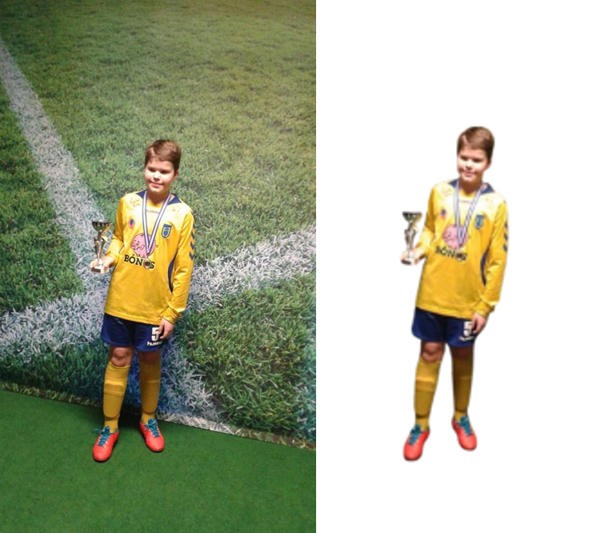
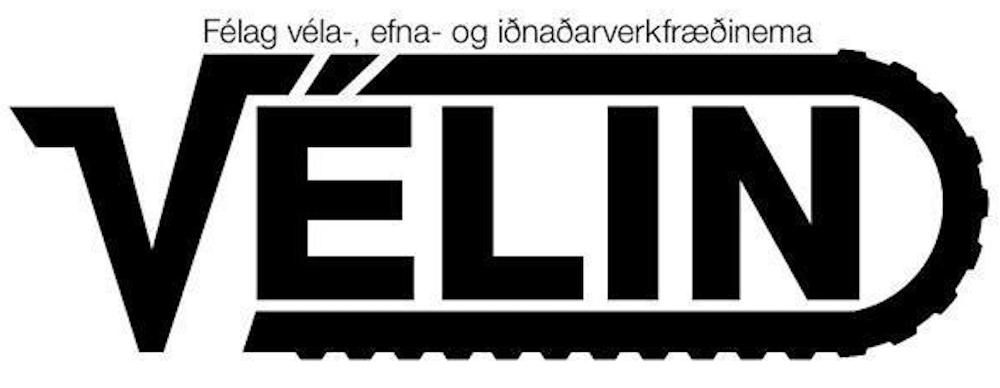
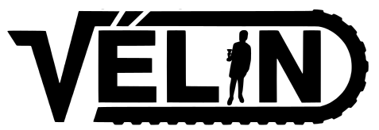
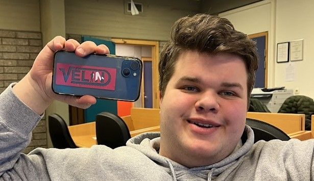
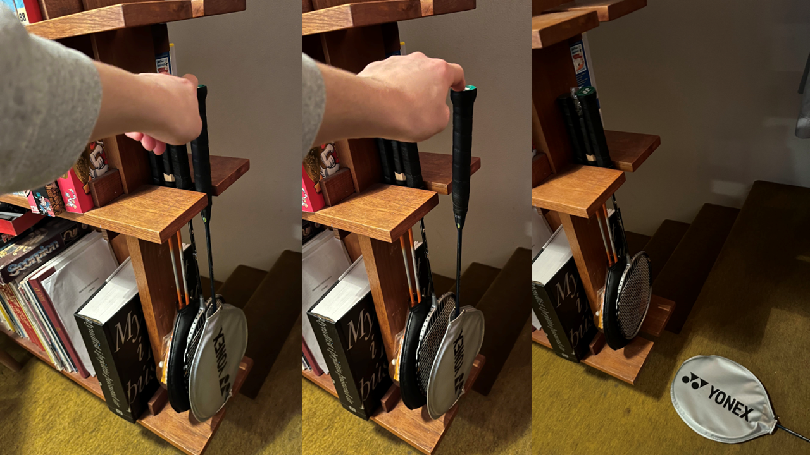
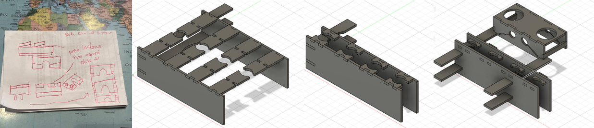
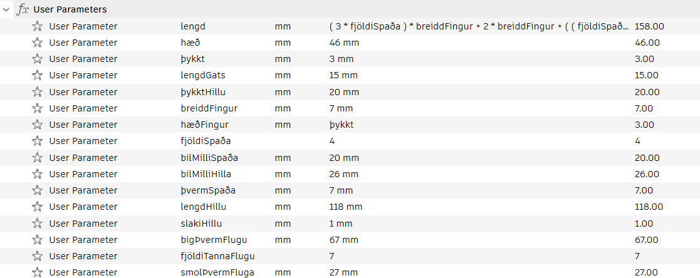
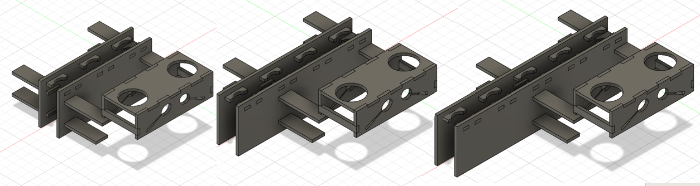
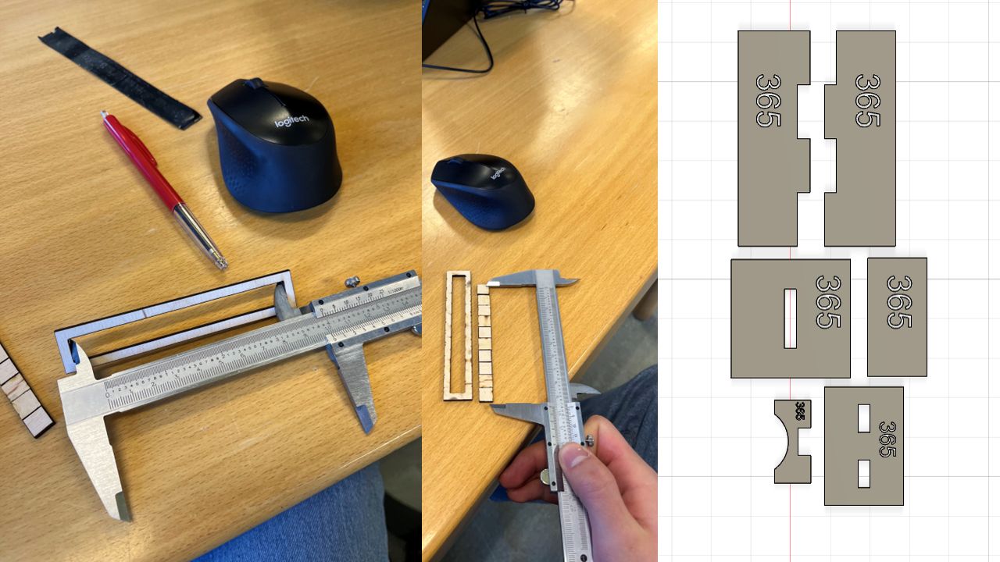
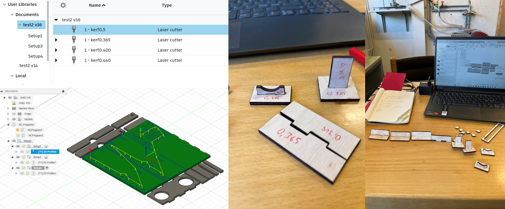

Parametrísk hönnun og tölvustuddur skurður
  
HLUTI I - Nota vínylskera til að búa til eitthvað
Verkefnið snerist um að búa til límmiða með vínilskera með einhverri hönnun á sér. Ég ákvað fjótt að gera nýja hönnun á merki Vélarinnar (nemendafélagsins) og bæta þar við mynd af vini mínum honum Jóhanni sem er forseti Vélarinnar. Ég ákvað að nota góða mynd af Jóhanni frá því að hann vann til verðlauna á fótboltamóti á yngri árum og setja hana í staðin fyrir stafinn i í merki Vélarinnar. Merkið var hannað í Inkscape. Þar nýtti ég þetta myndskeið til að klippa út i-ið úr merki Vélarinnar og koma fyrir Jóhann þar í staðinn. Til að losna við bakgrunninn á myndinni af Jóhanni var notast við fría "background remover" vefsíðu. Svo var sett Trace bitmap skipun á báðar myndirnar til þess að gera þær að vigrum svo myndirnar yrðu sem skýrastar og hægt væri að nota þær fyrir vínilskurð. Sjá má afrakstur þess hér til vinstri. Í Inkspace var breytt 'fill and stroke' stillingunum og valið 'no fill', 'flat color' og 0.02 mm breidd fyrir 'stroke style'. Hér fyrir neðan má sjá hvernig límmiðinn kom út eftir að hann hafði verið vínilskorinn úr bleiku efni þar sem hann Jóhann óskaði eftir því. Sjá má að Jóhann var mjög sáttur með límmiðan sinn og var gott að geta glatt hann og fegrað símahulstur hans með þessum skemmtilega límmiða. HLUTI II - Parametrískt hönnun á geirnegldu módeli
Hugmyndavinna
 Hanna átti parametrískt, geirneglt módel sem á að vera skalanlegt á mismunandi máta (efnisþykkt, hæðir og breiddir). Svo átti að nota geislaskera til að skera það út. Mikill tími fór í að ákveða hvað skildi hanna en að lokum áttaði ég mig á því þegar ég var á leiðinni í badminton að þetta væri tilvalið verkefni til að búa til stand fyrir badminton spaðana mína. Hingað til höfðu þeir verið geymdir á hillu sem sjá má hér til vinstri en líkt og myndirnar sýna var ekki nægilegt pláss og einn spaðinn datt ávallt niður. Í upphafi var hugmynd að útfærslu rissuð niður á blað og mál tekin á hillunni. Svo var hafist handa við þrívíddarteikningu á standinum sjálfum í Fusion 360 og tók það nokkrar ítranir en að lokum tókst mér að komast að hönnun sem ég var sáttur með og hafði ég þá einnig bætt við parti til að geyma badminton flugur. Hér að neðan er mynd sem sýnir mismunandi ítranir á hönnuninni. Parametrar
Eitt af skilyrðum hönnunar var að hún skildi vera parametrísk/skalanleg og voru allar stærðir við hönnun hlutar parametrar. Einnig var ákveðið að fjöldi spaða skildi vera parametrísk stærð og því einfaldlega hægt að skala hönnun fyrir mismunandi fjölda spaða með því að breyta einni tölu. Hér að neðan má sjá alla parametrana sem notaðir voru ásamt því að sjá hvernig hönnunin breytist við það eitt að breyta parametranum "fjöldiSpaða".  
Kerf test
Þegar hönnun var lokið var komið að því að geislaskera standinn. Til þess að módelið geirneglist sem best þar að mæla "kerf" geislans, sem er breidd efnis sem fjarlægt er meðan á skurðarferlinu stendur. Til þess að mæla það voru teiknaðir 10 jafnstórir ferningar og þeir skornir í geislaskeranum. Svo voru mæld breidd gatsins sem skilið var eftir og lengd allra ferninganna saman. Kerf-ið var svo fundið með því að taka mismun á breidd gatsins og lengd kubbanna og deila því með fjölda lína sem geislaskerinn skar. Útkoman var að kerf = (100.50mm-96.49mm)/11 = 0.365mm. Til þess að tryggja að þetta væru réttar mælingar á Kerf-inu voru teiknuð öll samskeytin og þau prófuð með mismunandi kerf-i.  Til þess að stilla kerf við prentun notaðist ég við þetta myndskeið og bjó til mismunandi stillingar fyrir mismunandi kerf stærðir. Að lokum eftir að hafa gert fimm test komst ég að því að mismunandi samskeyti þyrftu mismunandi kerf. Sem betur var hægt að stilla það í Fusion 360 og við prentun voru því partar í módelinu lagðir flatir niður og skornir með þrem mismunandi kerf stillingum. Hér að neðan má sjá mismunandi kerf stillingar og prófanir á þeim. Að lokum var notað kerf upp á 0.365, 0.425 og 0.450 fyrir mismunandi gerðir af samskeytum/festingum. 